EcoTrack API: inventário de emissões com pipeline CI/CD, Docker e deploy em staging e produção
A EcoTrack API registra as emissões de gases de efeito estufa de cidades e organizações e as consolida em toneladas de CO₂ equivalente (tCO₂e), seguindo os escopos do GHG Protocol. Isso dá à gestão pública um indicador ambiental (o “E” do ESG) acompanhável.
| Escopo | Significado | Exemplo municipal |
|---|---|---|
ESCOPO_1 | Emissões diretas | Frota de ônibus a diesel |
ESCOPO_2 | Energia comprada | Iluminação pública |
ESCOPO_3 | Cadeia de valor | Coleta e aterro de resíduos |
| Requisito | Entrega |
|---|---|
| Pipeline CI/CD | GitHub Actions: ci-cd.yml + deploy.yml |
| Build automático | Job Build e testes (Maven Wrapper) |
| Testes automatizados | 11 testes, 95,7% de cobertura de linhas |
| Deploy staging + produção | Jobs encadeados, mesma imagem nos dois |
| Dockerfile | Multi-stage, não-root, healthcheck |
| Orquestração | docker-compose.yml: API + PostgreSQL |
| Volumes, env, redes | db-data, app-logs · .env por ambiente · rede interna |
main no GitHubecotrack-api:<sha>jdbc:postgresql://db:5432/…ddl-auto: validate)/health, /readiness, /info (versão e ambiente)staging (debug, Swagger) · prod (log WARN, sem Swagger, health sem detalhes)./mvnw verify compila e roda os 11 testes (unitários, web e integração) e a cobertura JaCoCo. Publica o resumo dos testes e os relatórios e o .jar como artefatos.
Buildx com cache do GitHub Actions. Push para o GHCR com as tags <sha> (imutável) e main.
Environment staging. deploy.sh sobe o Compose, espera a readiness e roda o smoke test completo: cria, consulta, consolida e apaga um registro.
Environment production, que aceita aprovação manual. Implanta a mesma imagem e roda o smoke test somente leitura.
main roda tudo. Pull request roda só a etapa 1. Commits só de documentação não disparam.concurrency).deploy/*.env).DEPLOY_SSH_* configurados, envia o Compose e os scripts para uma VM com Docker.# Etapa 1: build FROM maven:3.9-eclipse-temurin-17 AS build COPY pom.xml . RUN --mount=type=cache,target=/root/.m2 mvn dependency:go-offline COPY src ./src RUN --mount=type=cache,target=/root/.m2 mvn package -DskipTests \ && java -Djarmode=tools -jar target/ecotrack-api.jar \ extract --layers --launcher --destination target/extracted # Etapa 2: runtime FROM eclipse-temurin:17-jre RUN groupadd --system ecotrack && useradd --system ... ecotrack COPY --from=build .../dependencies/ ./ COPY --from=build .../spring-boot-loader/ ./ COPY --from=build .../snapshot-dependencies/ ./ COPY --from=build .../application/ ./ ENV JAVA_TOOL_OPTIONS="-XX:MaxRAMPercentage=75 ..." USER ecotrack EXPOSE 8080 VOLUME ["/app/logs"] HEALTHCHECK CMD curl -fsS .../actuator/health/readiness ... ENTRYPOINT ["java", "org.springframework.boot.loader.launch.JarLauncher"]
| Estratégia | Benefício |
|---|---|
| Multi-stage | A imagem final não leva Maven, JDK nem código-fonte |
| Cache de dependências | Mudar o código não baixa as bibliotecas de novo |
| Camadas do Spring Boot | Bibliotecas (60 MB) separadas do código (188 kB); um novo deploy transfere quase nada |
| Usuário não-root | Menor impacto em caso de invasão |
| Healthcheck na readiness | O Compose sabe quando a API está pronta de fato |
| MaxRAMPercentage | A JVM respeita o limite de memória do container |
| APP_VERSION = SHA | Rastreabilidade em /actuator/info |
| Base multi-arquitetura | Roda em amd64 (CI) e arm64 (Apple Silicon) |
| Recurso | Configuração |
|---|---|
| Serviços | db (PostgreSQL 16) e app, com depends_on: service_healthy e restart: unless-stopped |
| Volumes | db-data (dados persistentes), app-logs (logs) |
| Redes | backend interna (app ⇄ banco), frontend (expõe só a API) |
| Variáveis | .env local · deploy/staging.env · deploy/production.env · senha via secret, obrigatória (${POSTGRES_PASSWORD:?}) |
| Staging | Produção | |
|---|---|---|
Projeto (-p) | ecotrack-staging | ecotrack-prod |
| Porta | 8081 | 8080 |
| Perfil Spring | staging | prod |
| Smoke test | completo (escrita) | somente leitura |
# Local cp .env.example .env docker compose up -d --build docker compose ps docker compose logs -f app docker compose down # mantém volumes # Build da imagem docker build -t ecotrack-api:local . # Ambientes (o mesmo script do pipeline) export APP_IMAGE=ecotrack-api:local SKIP_PULL=true POSTGRES_PASSWORD=*** ./scripts/deploy.sh staging POSTGRES_PASSWORD=*** ./scripts/deploy.sh production # Por baixo, o deploy.sh executa: docker compose -p ecotrack-staging \ --env-file deploy/staging.env up -d --no-build # Verificação pós-deploy ./scripts/smoke-test.sh http://localhost:8081 ./scripts/smoke-test.sh http://localhost:8080 --read-only # Testes ./mvnw verify
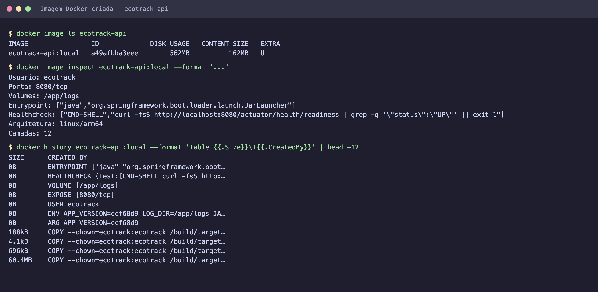
ghcr.io/mateusbhering/ecotrack-api com a tag do commit.
A camada da aplicação tem 188 kB; as dependências (60 MB) ficam em cache.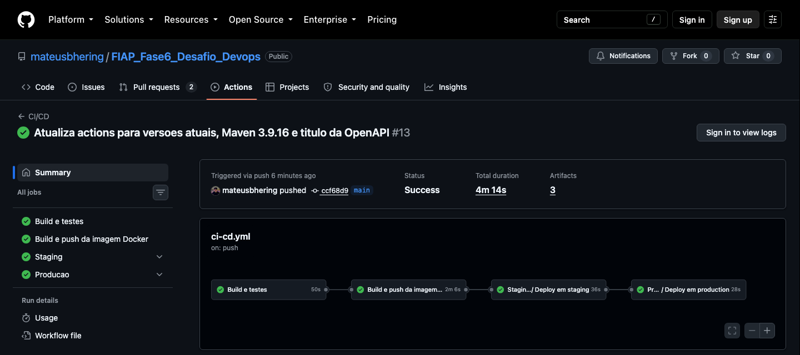
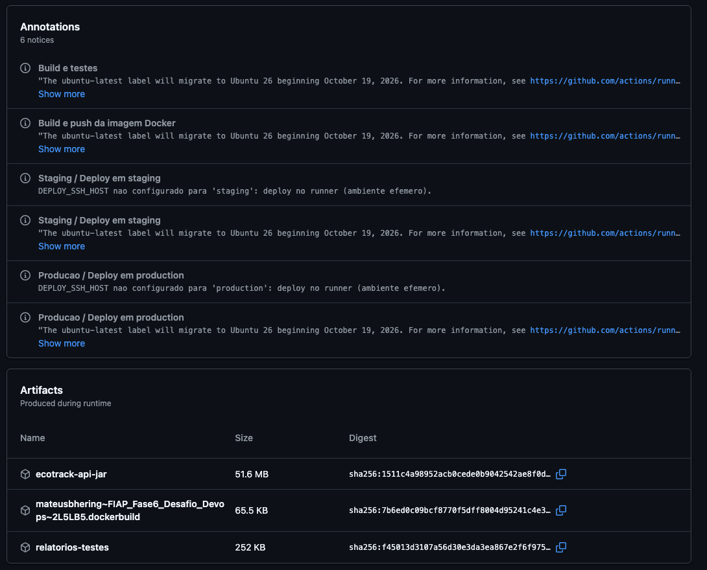
.jar, os relatórios de testes e cobertura (relatorios-testes) e o registro do build Docker.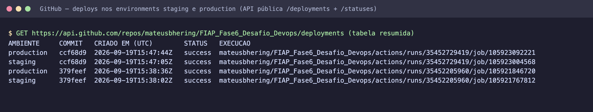
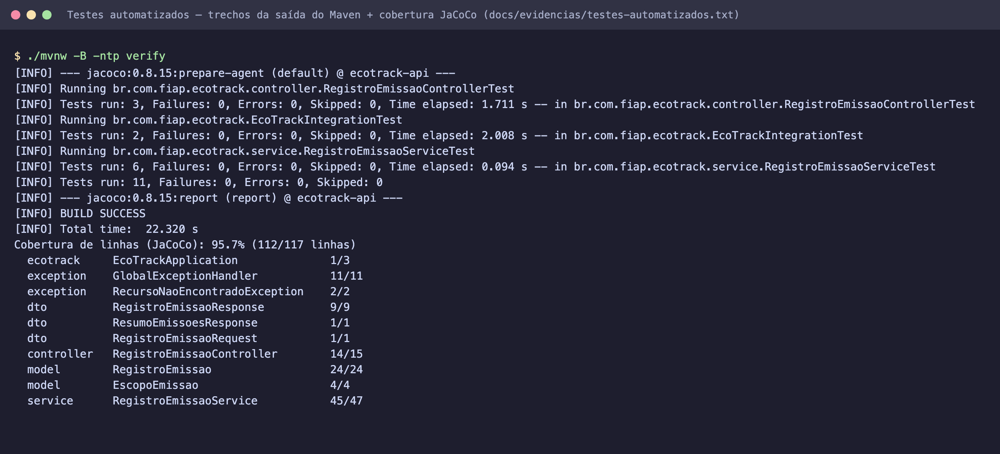
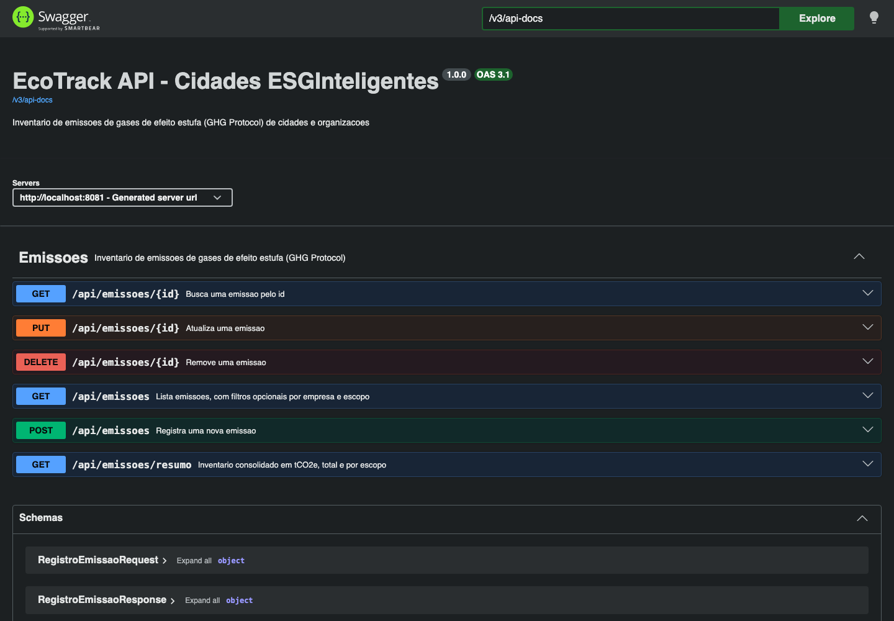
staging (http://localhost:8081).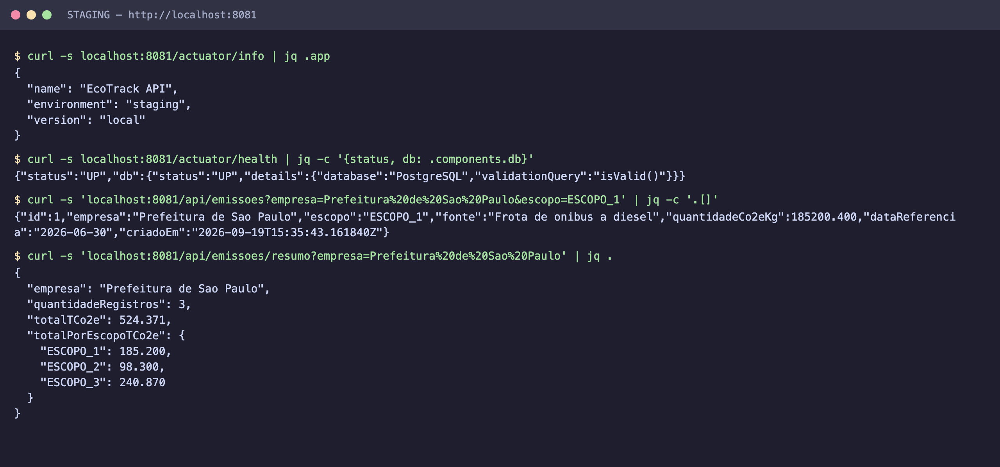
/actuator/info reporta environment: staging; health mostra o PostgreSQL conectado; inventário da cidade consolidado em tCO₂e por escopo.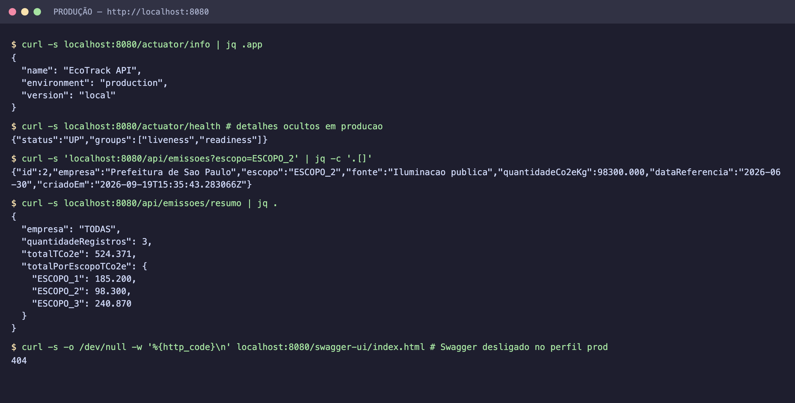
production, health sem detalhes internos e Swagger desativado (404), como esperado em produção.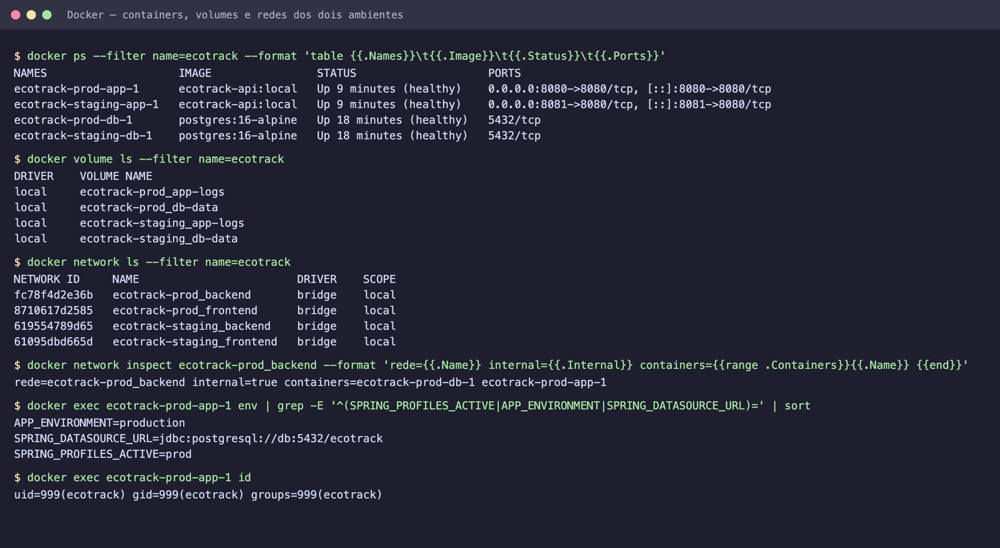
internal=true; variáveis injetadas pelo Compose; processo rodando como usuário não-root.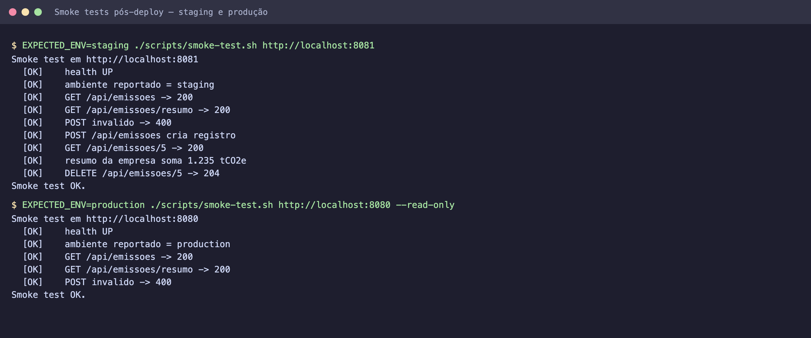
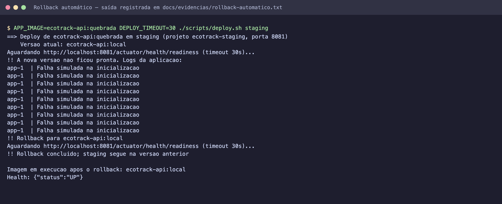
deploy.sh volta sozinho para a imagem anterior e o job falha, bloqueando a promoção.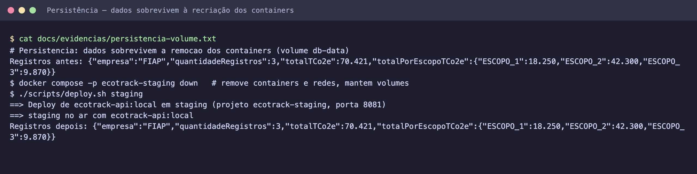
docker compose down e recriados pelo deploy; os registros continuam lá.| Desafio | Solução |
|---|---|
A imagem eclipse-temurin:17-jre-alpine não tem versão ARM64: o build falhava no Mac com Apple Silicon (no match for platform in manifest) | Troca para eclipse-temurin:17-jre (multi-arquitetura) e ajuste dos comandos de usuário e healthcheck para a base Ubuntu |
| O Docker travava ao montar a pasta do projeto (Desktop do macOS) como bind mount | O Compose passou a usar só volumes nomeados; o build envia o contexto sem depender de montagem de pasta |
| Maven não instalado na máquina de desenvolvimento | Maven Wrapper (./mvnw): a mesma versão do Maven no computador e no CI, sem instalação |
| Sem servidor em nuvem disponível para staging e produção | Workflow de deploy com dois alvos: SSH para uma VM ou o runner do GitHub, usando o mesmo Compose e o mesmo script |
| Evitar que uma versão quebrada derrube um ambiente | Espera da readiness probe, rollback automático, smoke tests e gate staging → produção |
| Testes de integração sem depender de um PostgreSQL no CI | H2 em modo PostgreSQL, rodando as mesmas migrations Flyway de produção |
| Senha do banco sem ir para o repositório | Secrets por Environment, senha efêmera e mascarada no runner, Compose que não sobe sem a senha |
| Primeira execução com avisos de actions obsoletas (Node 20) e PRs do Dependabot com saltos de versão principal | Actions atualizadas para as versões atuais; Dependabot configurado para ignorar migrações de versão principal (Spring Boot 4, Java 24) |
| Item | OK |
|---|---|
| Projeto compactado em .ZIP com estrutura organizada | ☑ |
| Dockerfile funcional | ☑ |
| docker-compose.yml ou arquivos Kubernetes | ☑ |
| Pipeline com etapas de build, teste e deploy | ☑ |
| README.md com instruções e prints | ☑ |
| Documentação técnica com evidências (PDF ou PPT) | ☑ |
| Deploy realizado nos ambientes staging e produção | ☑ |
Repositório e pipeline públicos: github.com/mateusbhering/FIAP_Fase6_Desafio_Devops